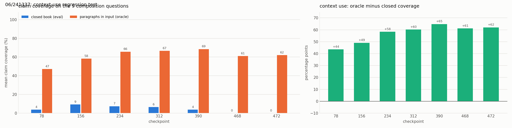
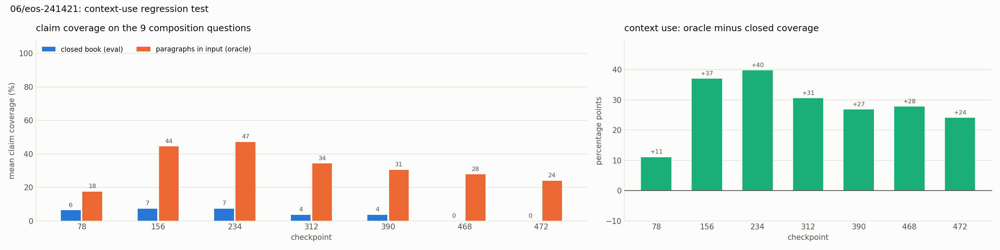

Experiment 06: Plain-text training without an output format
Tests with OPALX repo slice · field-solver / space-charge slice, 39 topics, judged by Claude Opus 5.5 against required and forbidden claims (README, source files)
1Summary
- Idea
- Train the facts of 02 as plain text, without question template and without EOS, like continued pretraining, so that no output format is learned. Variant 06b appends an EOS token to every text.
- Upshot
- Context use is kept (oracle coverage 0.61–0.69, base 0.82, 02 at most 0.43), but the facts barely come out when asked a question (closed-book coverage at most 0.21, 0 of 48 correct). The facts are stored, not retrievable by question.
2Setup
- Model
unsloth/Qwen3-8B-unsloth-bnb-4bit(Qwen3-8B, 4-bit), LoRA r = 32, α = 32, dropout 0, on all seven projections (q, k, v, o, gate, up, down); AdamW 8-bit, lr 1e-4 linear, 6 warmup steps, batch 8, weight decay 0.001, max sequence length 2048, seed 3407, loss on every token- Configurations
- Plain text: no Alpaca template, no EOS.
config.yamlidentical to 02: 8 epochs, 472 steps, checkpoint every 78 steps. Varianteos(06b): the same rows with the EOS token<|im_end|>appended, the only change. Evaluation is unchanged (Alpaca prompt, greedy, 768 tokens). - Training data
- 02 without the questions: per topic its
recallandmechanismanswers plus 7 recall and 3 mechanism rewordings (experiments/06/formulations.py, same facts reworded from the angles of 02's 12 questions, no new facts), each as one{"text": ...}row. 468 rows, no scenarios.
3Hypothesis
experiment 05 showed that 02 learned an output format (empty input → one memorized paragraph → EOS) and stopped using its input. Training the same facts without any format should keep the context-use bonus positive, like the base model's, instead of letting it drop to zero. Open: whether facts learned only from documents can be recalled by questions (Physics of LMs 3.1 suggests they may be stored but hard to extract).
4Results
| 06 | 06b | |
|---|---|---|
| eval best coverage (checkpoint) | 0.21 (156) | 0.16 (234) |
| eval fully correct | 0/48 | 1/48 |
| eval material errors | 94–100% | 90–98% |
| truncated answers | all | none |
| demo best coverage | 0.17 | 0.03 |
| oracle coverage (156 / 234 / 472) | 0.58 / 0.66 / 0.62 | 0.44 / 0.47 / 0.24 |
| context-use bonus (range) | +0.44 … +0.65 | +0.11 … +0.40 |
| checkpoint | closed-book coverage | oracle coverage | context-use bonus |
|---|---|---|---|
| 78 | 0.04 | 0.47 | +0.44 |
| 156 | 0.09 | 0.58 | +0.49 |
| 234 | 0.07 | 0.66 | +0.58 |
| 312 | 0.06 | 0.67 | +0.60 |
| 390 | 0.04 | 0.69 | +0.65 |
| 468 | 0.00 | 0.61 | +0.61 |
| 472 | 0.00 | 0.62 | +0.62 |

The bonus stays large at every checkpoint (+0.44 to +0.65): the adapter keeps reading its input. Closed book it covers almost nothing.
| checkpoint | closed-book coverage | oracle coverage | context-use bonus |
|---|---|---|---|
| 78 | 0.06 | 0.18 | +0.11 |
| 156 | 0.07 | 0.44 | +0.37 |
| 234 | 0.07 | 0.47 | +0.40 |
| 312 | 0.04 | 0.34 | +0.31 |
| 390 | 0.04 | 0.31 | +0.27 |
| 468 | 0.00 | 0.28 | +0.28 |
| 472 | 0.00 | 0.24 | +0.24 |

With EOS, oracle coverage peaks at checkpoint 234 and falls to 0.24 by 472: the same direction as 02, only slower.
5Conclusion
Plain-text training mostly keeps the ability to use context, but with a question prompt the memorized facts barely come out. Prompted with the beginning of a training text, the model completes it exactly and then rambles on, so the facts are stored. Missing EOS makes every 06 answer run to the token limit and inflates the material errors.
06b: EOS works as intended (no truncated answers, 60–80 words instead of about 650), but the scores are worse. Part of the drop is a length effect: claim coverage rewarded 650 words of rambling that hit claims by chance, so the real closed-book recall is about 0.1–0.16 in both runs. Material errors stay at about 90% even in short answers: under a question prompt the model writes invented OPALX-style text, although less than 1% of its sentences are verbatim training sentences. Context use is the real regression: EOS adds a learned paragraph → stop format, and the longer it trains, the more it answers from that pattern instead of the input.
Takeaway: EOS alone does not help retrieval and costs context use. For the next step (plain text plus some question–answer rows), choose early checkpoints (156–234), give some question rows a non-empty input, and watch the oracle bonus over all checkpoints.
Related: experiment 05 (the context-use test) · experiment 02 (question–answer training) · experiment 07 (continuing this adapter with chain of thought)